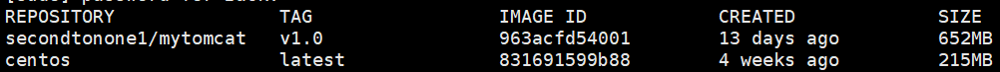
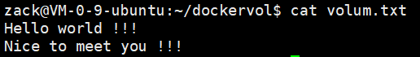
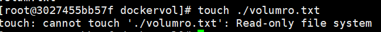
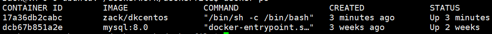

今天介绍docker容器卷的概念，当我们想将docker内的文件路径挂载在宿主机上时，可以采用这种方式。
目前可以通过启动命令时使用-v选项设置卷，也可以通过dockerfile设置。
我们查看下当前宿主机存在的镜像
1 | sudo docker images |

通过-v 命令启动一个卷
1 | docker run -it --name centosvolum -v /home/zack/dockervol:/dockervol centos:latest |
-v 表示卷的选项，/home/zack/dockervol 表示宿主机目录，/dockervol表示docker内部路径，通过-v选项将两个路径关联起来。
我们在docker内创建volum.txt，会看到宿主机也自动创建了一个volum.txt文件。
这样当我们修改其中一个文件时，另一端可以更新为最新的。我们修改docker内的volum.txt，新增一些文本内容
1 | vim /dockervol/volum.txt |
然后在宿主机一端输入命令
1 | cat /home/zack/dockervol/volum.txt |
可以看到宿主机里的volum.txt中更新为我们在docker中录入的内容

也可以挂在一个只读的docker路径
1 | docker run -it --name centos-volume-ro -v /home/zack/dockervol:/dockervol:ro centos:latest |
如果我们在docker内/dockervol/路径下创建文件，会显示只允许只读操作的提示

但是我们可以在宿主机创建文件，
1 | touch volumro.txt |
这样docker路径下可以显示新创建的文件和读取文件内容, 进入docker并查看volumro.txt
1 | docker exec -it centos-volume-ro /bin/bash |
就可以看到我们刚才录入的数据了
通过Dockerfile设置volume
也可以通过Dockerfile设置volume卷信息，我们写一个Dockerfile
1 | from centos |
我们根据这个Dockerfile生成镜像
1 | go build -f ./Dockerfile -t zack/dkcentos . |
构建完成后可以通过docker images查看生成的镜像
接下来根据zack/dkcentos 生成容器
1 | docker run -it --name dk01 zack/dkcentos |
docker ps 可以看到正在运行的docker

执行如下命令可以查看容器的卷信息
1 | docker inspect 17a36db2cabc |
多个容器数据共享
通过容器之间继承，将卷空间互相共享
1 | docker run -it --name dk02 --volumes-from dk01 zack/dkcentos |
通过volumes-from选项将dk02容器继承dk01，实现卷的共享，
所以我们在dk02的/dockervolume/container1目录下创建一个文件并写入hello, dk02
1 | touch dk02.txt |
会看到dk01容器的/dockervolume/container1目录下也会生成dk02.txt，并且包含写入的文本。
接下来基于dk01再创建一个dk03容器
1 | docker run -it --name dk03 --volumes-from dk01 zack/dkcentos |
会看到dk03容器的/dockervolume/container1目录下也会生成dk02.txt，并且包含写入的文本。
此时停止容器dk01
1 | docker stop dk01 |
然后在dk03的/dockervolume2/container2目录下创建dk03.txt，写入文本很Hello, dk03
1 | touch dk03.txt |
此时查看dk02， 可以看到/dockervolume2/container2文件夹下产生了dk03.txt，并且包含Hello, dk03文本
此时启动dk01, 其/dockervolume2/container2文件夹下也会同步dk03.txt
感谢关注公众号
今天的笔记就这些吧，感谢关注公众号